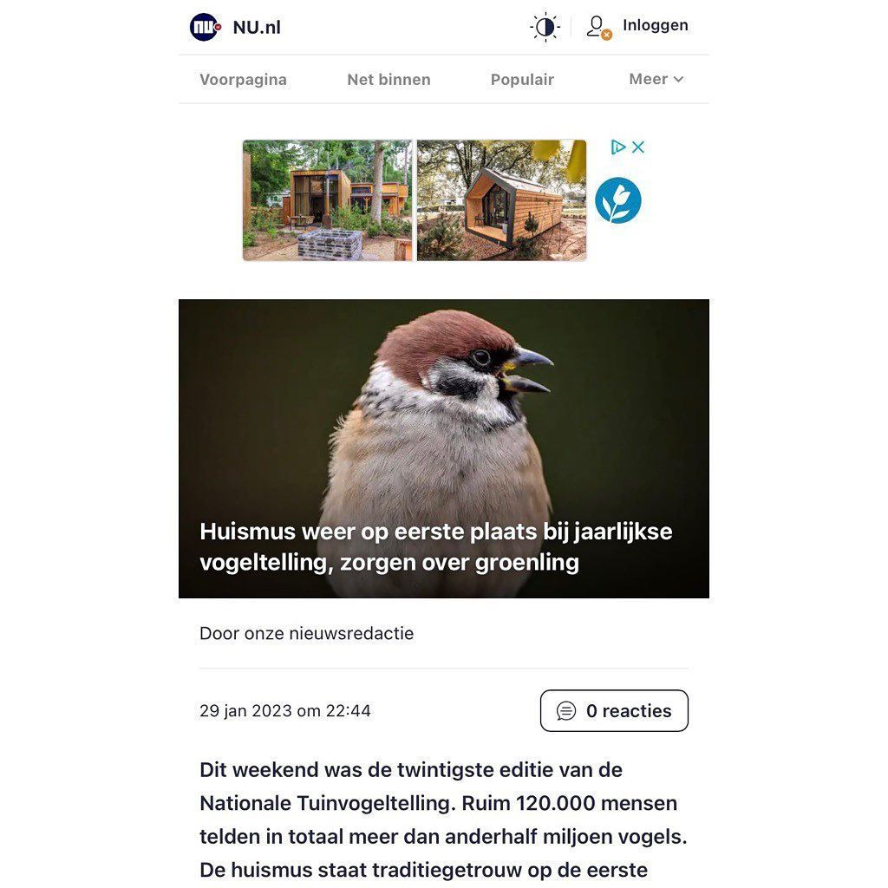

Ringmus, geen huismus
30 januari 2023 · NU.nl
- Op de foto
- Ringmus
- Het ging over
- Huismus

Ik hoop dat @nu.nl zelf geen tuinvogeltelling heeft gedaan. Zou niet goed zijn voor de statistieken..
(Op de foto staat een Ringmus, geen Huismus)